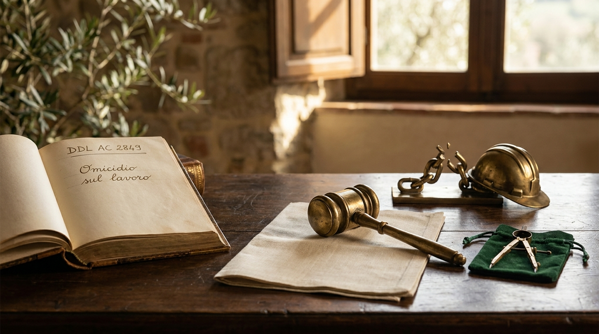

Omicidio sul lavoro: il DDL AC 2849 e le nuove pene fino a 18 anni
Alla Camera dei Deputati prosegue l'esame del DDL AC 2849, che inasprisce le pene per gli infortuni mortali e le lesioni gravi sul lavoro, fino a un massimo di diciotto anni di reclusione. La misura riscrive l'equilibrio della responsabilità penale del datore di lavoro. Vediamo cosa prevede il testo e quali implicazioni concrete porta per imprese e organizzazioni della sicurezza.

Inquadramento normativo
Il DDL AC 2849, in discussione alla Camera dei Deputati, interviene sul trattamento sanzionatorio dei reati connessi agli infortuni sul lavoro. Il quadro vigente affida la repressione di questi eventi alle fattispecie generali del codice penale: l'omicidio colposo (art. 589 c.p.) e le lesioni personali colpose (art. 590 c.p.), aggravati quando il fatto è commesso con violazione delle norme antinfortunistiche.
Il testo in esame innalza in modo significativo i massimi edittali, portando la pena per i casi più gravi fino a diciotto anni di reclusione. L'obiettivo dichiarato è colmare la distanza, percepita come eccessiva, tra la gravità dell'evento — la morte di un lavoratore — e la risposta sanzionatoria attuale, spesso ridotta dal gioco delle circostanze attenuanti e dalla prescrizione.
È utile una precisazione tecnica: si tratta di reati colposi, cioè commessi senza intenzione di provocare il danno ma per negligenza, imprudenza, imperizia o violazione di norme cautelari. L'inasprimento non muta la natura colposa del fatto, ma ne aumenta il peso punitivo, con riflessi diretti anche sui termini di prescrizione e sull'applicabilità di misure cautelari.
Implicazioni pratiche
Per il datore di lavoro e per chi riveste posizioni di garanzia — dirigenti, preposti, responsabili del servizio di prevenzione e protezione — l'aumento dei massimi edittali non è un dettaglio formale. Pene più elevate significano termini di prescrizione più lunghi: i procedimenti potranno arrivare a sentenza con minore probabilità di estinzione del reato per decorso del tempo.
Cambia anche il rapporto con gli istituti deflattivi. La sospensione condizionale della pena, l'accesso a riti alternativi e la sostituzione delle pene detentive brevi diventano meno accessibili quando il limite edittale cresce. Aumenta inoltre lo spazio per l'applicazione di misure cautelari personali nella fase delle indagini.
Il punto centrale resta però la prova della colpa. La responsabilità penale presuppone l'accertamento di una condotta violativa delle norme di sicurezza e di un nesso causale con l'evento. La completezza della documentazione aziendale in materia di prevenzione — valutazione dei rischi, deleghe, formazione, manutenzioni — diventa il terreno decisivo su cui si gioca la difesa.
Va ricordato che il DDL è in fase di discussione. Il testo può subire modifiche nel passaggio parlamentare e non è ancora legge. Le organizzazioni dovrebbero monitorare l'iter senza attendere l'entrata in vigore per rivedere i propri assetti.
Cosa fare in concreto
- Verificate il Documento di Valutazione dei Rischi (DVR). Controllate che sia aggiornato rispetto ai processi reali, datato e sottoscritto, e che recepisca ogni modifica organizzativa o tecnologica recente.
- Riesaminate le deleghe di funzioni. Accertatevi che le deleghe in materia di sicurezza siano scritte, accettate, dotate di autonomia di spesa e conferite a soggetti idonei: una delega valida incide sulla ripartizione della responsabilità.
- Documentate formazione e manutenzioni. Conservate registri, attestati e verbali. In sede penale, la prova dell'adempimento passa dalla tracciabilità delle attività svolte.
- Aggiornate il modello organizzativo 231. Se l'azienda adotta un modello ex D.Lgs. 231/2001, verificate che la parte relativa ai reati in materia di sicurezza sia effettiva e vigilata dall'Organismo di Vigilanza.
- Pianificate un audit interno. Una verifica indipendente sullo stato della sicurezza consente di intercettare le criticità prima che diventino contestazioni.
L'inasprimento sanzionatorio sposta il baricentro dalla gestione dell'evento alla prevenzione documentata. Consigliamo di affrontare la materia con un approccio organizzativo strutturato, in cui ogni misura di sicurezza sia non solo adottata ma anche dimostrabile.
---
*Contributo informativo a cura di Tamburro & Partners - Avv. Giuseppe Tamburro. Non costituisce parere legale.*
Ogni storia di lavoro ha i suoi tempi.
Se gestisci HR e vuoi un confronto su contenzioso, ispezioni o licenziamenti, scrivi allo studio. Ti rispondiamo entro un giorno lavorativo.